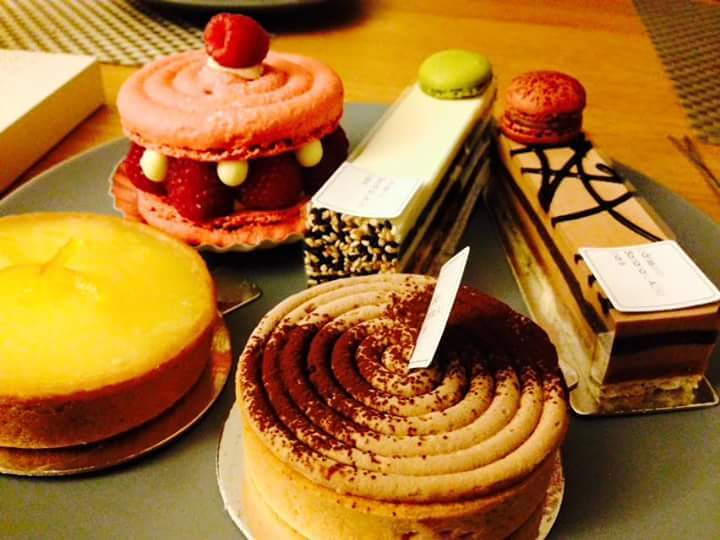
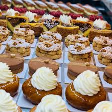
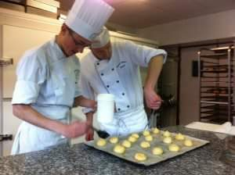
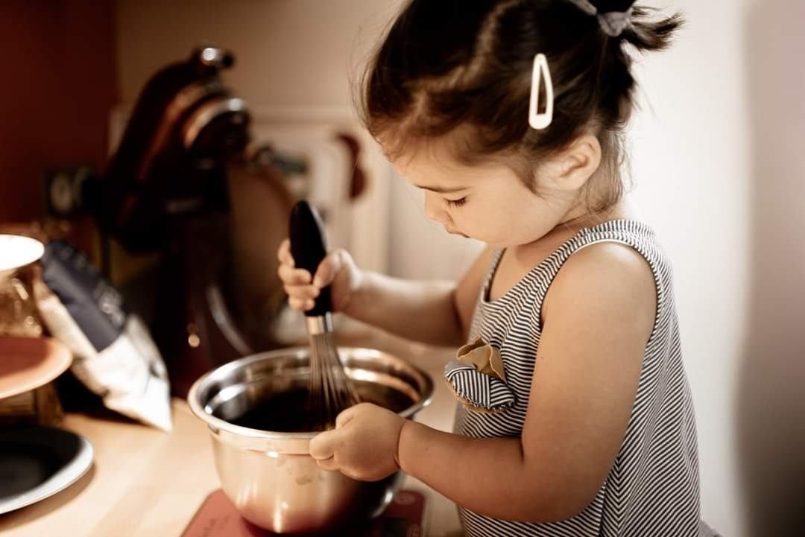
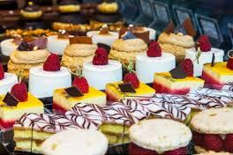

La pâtisserie est une préparation sucrée ou salée de pâte préparée et cuite au four.
 La tradition européenne de la pâtisserie remonte souvent à l'époque des pâtes brisées et feuilletées qui étaient utilisées dans toute la Méditerranée dans l'Antiquité. Dans l'ancienne Méditerranée, les Romains, les Grecs et les Phéniciens avaient tous des pâtisseries de type phyllo dans leurs traditions culinaires. Dans les pièces d'Aristophane, écrites au 5e siècle avant J.-C., il est question de sucreries, notamment de petites pâtisseries fourrées aux fruits. La cuisine romaine utilisait de la farine, de l'huile et de l'eau pour fabriquer des pâtisseries qui étaient utilisées pour recouvrir les viandes et les volailles pendant la cuisson afin d'en conserver les jus, mais ces pâtisseries n'étaient pas destinées à être mangées. Une pâtisserie destinée à être mangée était une pâtisserie plus riche qui était transformée en petites pâtisseries contenant des œufs ou des petits oiseaux et qui était souvent servie lors des banquets. Les Grecs et les Romains avaient tous deux du mal à fabriquer une bonne pâtisserie car ils utilisaient de l'huile dans le processus de cuisson, et l'huile fait perdre à la pâtisserie sa rigidité.
Dans la cuisine médiévale d'Europe du Nord, les pâtissiers étaient capables de produire de belles pâtisseries rigides parce qu'ils cuisinaient avec de la graisse alimentaire et du beurre. Certaines listes d'ingrédients incomplètes ont été retrouvées dans des livres de cuisine médiévaux, mais aucune version complète et détaillée. Il existait des pâtisseries rigides et vides qui étaient consommées uniquement par les serviteurs et étaient recouvertes d'un glaçage au jaune d'œuf pour les rendre plus agréables à manger. Les pâtisseries médiévales comprenaient également des petites tartes pour ajouter de la richesse.
Ce n'est que vers le milieu du 16e siècle que de véritables recettes de pâtisserie ont commencé à apparaître[3],[4]. Ces recettes ont été adoptées et adaptées au fil du temps dans divers pays européens, donnant lieu à la myriade de traditions pâtissières connues, des pastéis de nata portugais à l'ouest aux pirozhki russes à l'est. L'utilisation du chocolat dans les pâtisseries occidentales, si courante aujourd'hui, n'est apparue qu'après que les commerçants espagnols et portugais eurent apporté le chocolat du Nouveau Monde en Europe à partir du xvie siècle. De nombreux historiens culinaires considèrent le pâtissier français Antonin Carême (1784-1833) comme le premier grand maître de la pâtisserie des temps modernes.
La pâtisserie a une forte tradition dans de nombreuses régions d'Asie. Les pâtisseries chinoises sont fabriquées à partir de riz, ou de différents types de farine, avec des garnitures à base de fruits, de pâte de haricots sucrés ou de sésame. Les gâteaux de lune font partie des traditions du festival de la mi-automne chinois, tandis que les cha siu bao, des brioches de porc cuites à la vapeur ou au four, sont un élément régulier du menu salé des dimsum. Au xixe siècle, les Britanniques ont introduit la pâtisserie de style occidental en Extrême-Orient, mais c'est l'influence française de Maxim (chaîne de restaurants hongkongais), dans les années 1950, qui a rendu la pâtisserie occidentale populaire dans les régions de langue chinoise, à commencer par Hong Kong. Le terme « gâteau occidental » (西餅) est utilisé pour désigner la pâtisserie occidentale, sinon on suppose qu'il s'agit de pâtisserie chinoise.
D'autres pays asiatiques, comme la Corée, préparent des pâtisseries-confiseries traditionnelles comme le tteok, le hangwa et le yaksik avec de la farine, du riz, des fruits et des ingrédients spécifiques à la région pour en faire des desserts uniques. Le Japon possède également des pâtisseries-confiseries spécialisées plus connues sous le nom de mochi et de manjū. Les pâtisseries-confiseries originaires d'Asie se distinguent nettement de celles originaires d'Occident, qui sont généralement beaucoup plus sucrées.
Certaines pâtisseries peuvent être particulièrement caractéristiques d'une région (kouign-amann, cannelé…) ou traditionnellement spécifiques de périodes de l'année (galette des rois, bûche de Noël…).